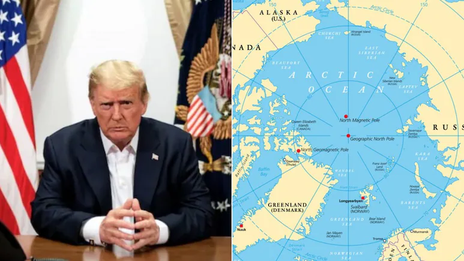

Breaking News
 Jan 14 , 3:43 AM
Jan 14 , 3:43 AM
by James Thornton
As President Trump pushes harder to take control of Greenland, tensions are rising, causing problems with Denmark and Greenland.
Greenlandic and Danish foreign ministers will convene with U.S. Vice President JD Vance and Secretary of State Marco Rubio in Washington on Wednesday following renewed threats regarding the assertion of control over Greenland, an autonomous territory of Denmark. Greenland's Prime Minister Jens-Frederik reaffirmed Greenland's allegiance to Denmark, discounting the possibility of establishing itself as a U.S. territory. "We face a geopolitical crisis, and if we have to choose between the U.S. and Denmark here and now, then we choose Denmark," Nielsen informed reporters in Copenhagen on Tuesday, standing alongside Danish Prime Minister Mette Frederiksen. "We stand united in the Kingdom of Denmark.” Greenland’s political landscape seems to be evolving, with leaders and residents emphasizing long-term independence over imminent autonomy. In the present circumstances, I believe it would be prudent for Greenland to establish a long-term commitment to Denmark and to continue operating within the NATO security framework, said Finn Meinel, a jurist based in Nuuk. Danish Foreign Minister Lars Lokke Rasmussen and Greenlandic counterpart Vivian Motzfeldt requested the forthcoming meeting in Washington in response to President Trump's remarks. Rasmussen emphasized the importance of settling disagreements through diplomacy." Our aim is to move the discussion into a meeting room where we can look each other in the eye," he stated. Denmark, which has administered Greenland for centuries, is under increasing pressure to strengthen Arctic defenses in response to escalating geopolitical tensions. Danish Defense Minister Troels Lund Poulsen is scheduled to meet NATO Secretary General Mark Rutte in Brussels next week, as multinational NATO exercises in Greenland are planned for 2026. Danish Prime Minister Frederiksen recognized the difficulties posed by the increased U.S. interest. She stated on Tuesday that "It is hard to stand up to the U.S., our most important ally. But the hardest part may still be ahead of us."
As President Trump pushes for the U.S. to take over Greenland, things are getting tense. Denmark and Greenland are going to have a hard time with this. This will have a big impact on NATO's future and the politics of the Arctic. The U.S. Congress is stepping in to stop Trump's plans. This shows how important international law and sovereignty are in the area.
Co-Chairs of the Arctic Caucus Lisa Murkowski (R-Alaska) and Angus King (I-Maine) are scheduled to convene on Wednesday with Danish Ambassador Jesper Møller Sørensen to reaffirm their opposition to President Donald Trump’s initiative to acquire Greenland. The private encounter occurs amid Trump's suggestion of acquiring Greenland "one way or another" — a statement that has elicited strong condemnations from Copenhagen and Nuuk. The proposal to seize control of the Danish territory has encountered opposition from certain senior Republicans and outspoken disapproval from Democrats. Murkowski stated that she would endorse a war powers resolution to prohibit Trump from undertaking any military action to invade Greenland, should such a measure be presented. A bipartisan coalition of House legislators has introduced similar legislation that encompasses any NATO ally. “There’s been a lot of talk about that, which, in fairness, is crazy,” Murkowski stated in an interview, referring to speculation that Congress might ultimately invoke war powers authorities concerning Greenland. “Who would have ever thought you would say the word Greenland in the same sentence as war powers resolution?” The new legislation emerges as Hill Democrats seek measures to prevent the Trump administration from pursuing additional military actions in Venezuela. The Senate is prepared to cast a vote this week on a war powers resolution related to Venezuela, although its prospects in the House remain uncertain. Meanwhile, officials within the Trump administration are openly exploring options—including the potential use of force—to acquire Greenland, a course of action that would activate NATO’s mutual defense clause and jeopardize the integrity of the alliance. “It’s easier,” Trump stated on Sunday, in reference to the purchase of the island. But ultimately, we shall acquire Greenland. Murkowski stated that the purpose of Wednesday’s meeting—with Møller Sørensen and other representatives from Denmark and Greenland—is to foster a constructive dialogue with Danish and Greenlandic officials and to emphasize that Capitol Hill is not a passive observer as Arctic tensions escalate. We in this Congress indeed have a role and some input regarding whether it is appropriate to pursue the actions proposed by the president, she stated. Murkowski stated that she will depart for Copenhagen later this week accompanied by a small, bipartisan, bicameral delegation to directly convey congressional concerns to Danish officials.
Tensions have escalated this month among Washington, Denmark, and Greenland as President Trump and his administration intensify their efforts, with the White House exploring a variety of options, including military intervention, to secure the extensive Arctic island. Trump reaffirmed his position that the United States must acquire Greenland, asserting that otherwise Russia or China would do so, during remarks aboard Air Force One on Sunday. He stated that he would prefer to "negotiate a deal" for the territory, but emphasized that, "one way or the other, we’re going to have Greenland." Danish and Greenlandic representatives are anticipated to visit Washington this week for discussions with Secretary of State Marco Rubio. China responded accordingly on Monday, stating that the United States should not employ other nations as a "pretext" to advance its interests in Greenland and affirmed that China's activities in the Arctic are in accordance with international law. Asked in Beijing regarding U.S. assertions that Washington must assume control of Greenland to prevent China and Russia from gaining dominance, Chinese Foreign Ministry spokesperson Mao Ning responded that “China’s activities in the Arctic are intended to foster peace, stability, and sustainable development in the region and are consistent with international law.” She did not provide further details regarding those activities.
“The rights and freedoms of all countries to conduct activities in the Arctic in accordance with the law should be fully respected,” Mao stated, without specifically referencing Greenland. “The U.S. should not pursue its own interests by using other countries as a pretext.” She stated that “the Arctic concerns the overall interests of the international community.” Coons stated that, in addition to strengthening the United States' relationship with Denmark, he intends for the voyage to highlight that there is no immediate threat to Greenland from China or Russia. Danish Prime Minister Mette Frederiksen has cautioned that an American acquisition of Greenland would signify the demise of NATO. On Friday, Greenland’s Prime Minister Jens-Frederik Nielsen, along with the leaders of the four other parties in the territory’s parliament, issued a joint statement reaffirming that Greenland’s future must be determined by its own people and expressing their hope that the United States’ disregard for their country concludes. Greenland’s leader also issued a statement on Monday, reaffirming that Greenland is an integral part of the Kingdom of Denmark and a member of NATO through the Realm. This indicates that our security and defense responsibilities fall within the scope of NATO. This represents a fundamental and unwavering stance, he stated. “We are a democratic society that makes our own decisions. And our actions are based on international law and the rule of law.” In 2018, China designated itself as a "near-Arctic state" in an effort to enhance its influence within the region. Beijing has also declared intentions to establish a "Polar Silk Road" as a component of its comprehensive Belt and Road Initiative, thereby fostering economic connections with nations worldwide.

James Thornton is a U.S. business reporter covering markets, technology, and economic policy.